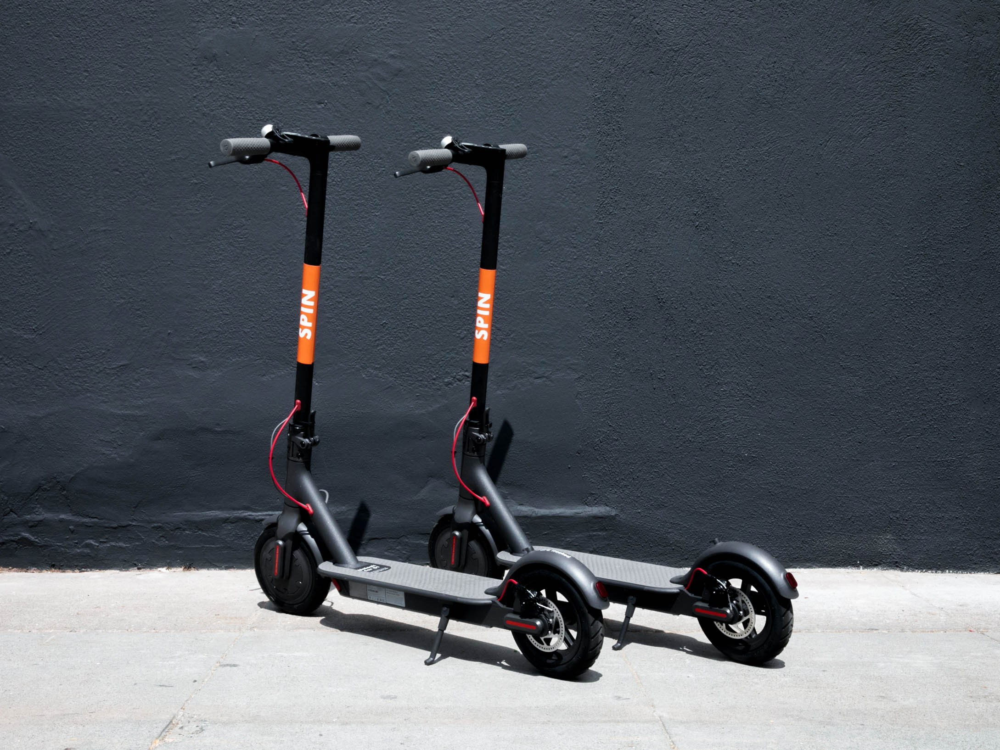
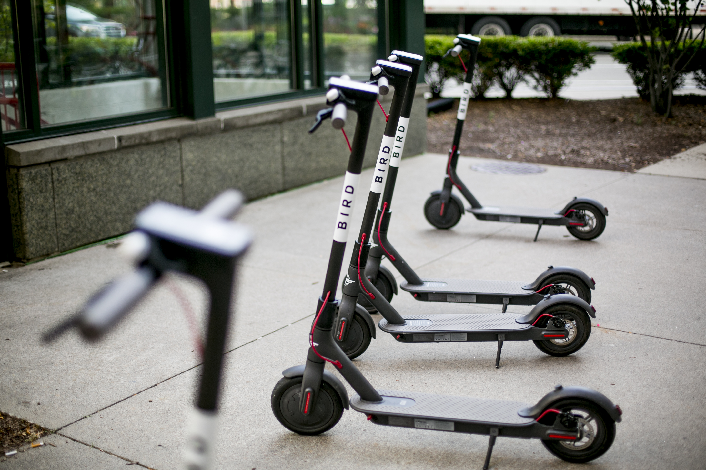
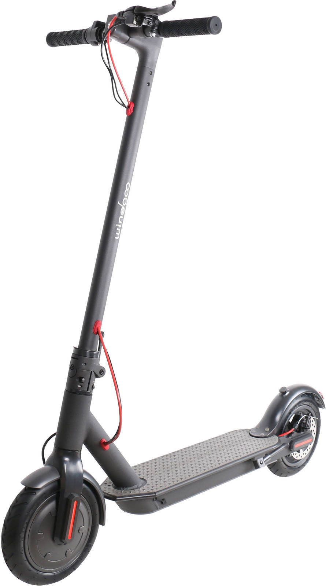
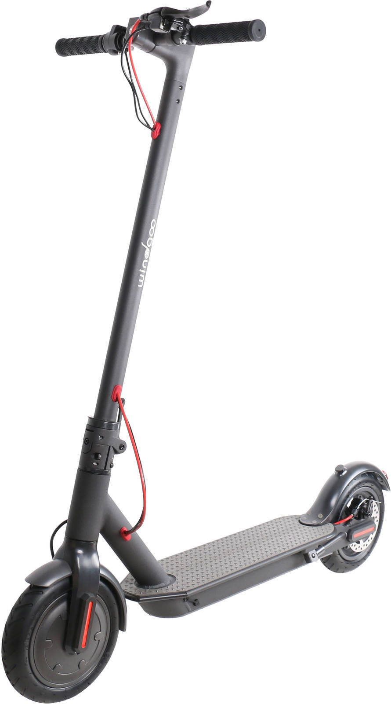

E-scooter online
warsaw, poland
Home scooters About us Contact us
 
Electric scooters are becoming more and more popular each year
These gadgets make it easy to get you where you’re going without spending a fortune on gas. With an electric scooter, you’ll save money and get your daily dose of exercise.
There are no harmful carbon emissions, no expensive repairs, and no risk of explosion.
Still wondering if it’s worth buying an electric scooter? Here are the benefits:
1.Save Thousands of Dollars
2.These vehicles are much cheaper than cars and don’t require gas.
3.They work on batters that need to be recharged once every few hours.
In general, it’s recommended to recharge them after every use. Requirements vary from one manufacturer to another.
Riding an electric scooter costs less than a penny per mile, while driving a gas-powered vehicle costs up to 1500 percent more. Additionally, gas-powered vehicles require maintenance, registration, insurance, license fees and other expenses that add up. An electric scooter can save you thousands of dollars a year. Protect the Environment
Since these vehicles run on batteries, there are no fumes or burning of fuels in the engine.
Electric scooters are not only cost effective, but eco-friendly too. If you want to reduce your carbon footprint, look no further. With an electric scooter, you’ll improve air quality and decrease pollution.
Keep Fit
When you ride an electric bike, you can use pedals, power, or both. This is particularly useful for those who want to stay active throughout the day.
Whether you want to exercise more, lose a few pounds, or keep fit, an electric scooter might be exactly what you need. In case you’re tired or don’t want to get sweaty, just twist and go. Some models can be configured as a mountain e-bike and used for traveling off road, which is a huge advantage.
Save Time
Electric scooters are easy to drive and can help you avoid traffic tie-ups. These vehicles provide a quick means of getting to your destination. Due to their compact size, they can be easily parked in spaces where traditional cars or motorcycles don’t fit. By riding an electric scooter, you’ll save time in traffic and reach your destination faster.
Stay Safe
The latest electric scooters provide excellent comfort and safety. They combine stability and maneuverability, featuring steering locks, PIN code anti-start protection, limited speed, circuit breakers, and automatic power cut-off. Since they’re classified as bikes in most countries, you don’t need a driving license.
 

© E-scooter online.